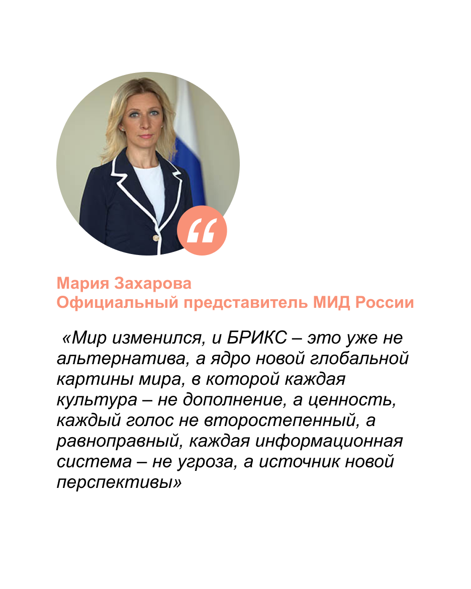
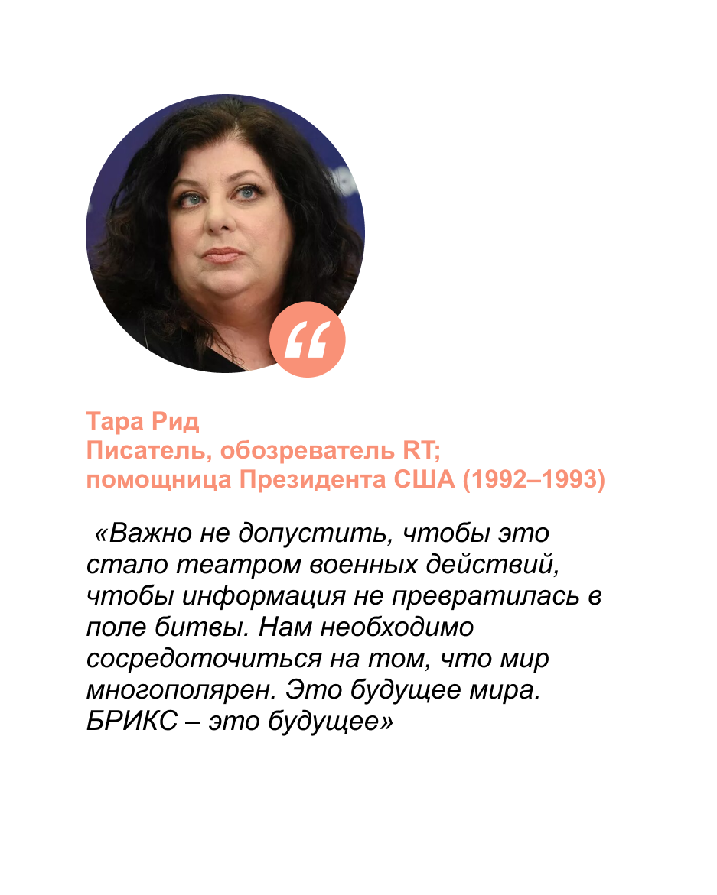

Ссылка на опубликованную статью
Направление «Суверенитет и партнерство: судьба российских медиапроектов на рынках БРИКС»
Не запретами, а контентом: Россия через TV BRICS удваивает медиаприсутствие в БРИКС
В 2024 году – в период председательства в БРИКС – Россия удвоила медиамощь: выпуск материалов на TV BRICS вырос в 2 раза, а аудитория достигла 600 тысяч пользователей. Новые медиапроекты укрепляют позиции в 2025 году, несмотря на санкции.
Санкции Европейского союза против Ассоциации журналистов БРИКС, созданной полтора года назад и не имеющей официальной поддержки правительств, демонстрируют новую реальность: в 2025 году под ударом могут находиться любые формы медиакооперации с участием российских журналистов. Блокирование деятельности журналистов в рамках БРИКС создает прецедент вмешательства в формирование медийной повестки стран-участниц.
БРИКС – это ядро новой глобальной картины мира, где свобода слова становится пространством для «взаимоуважительного диалога». Именно этот принцип продвигает Международная медиасеть TV BRICS – инновационная платформа многостороннего информационного обмена, созданная по инициативе лидеров стран БРИКС в 2017 году. Медиаплатформа объединяет более 100 крупнейших СМИ из 30 стран и формирует единое информационное пространство без доминирования одной точки зрения. Такой подход – основа многополярности, в условиях которой единственным способом достижения целей является поиск баланса интересов.
Российские медиапроекты
В рамках экосистемы TV BRICS российские медиапроекты решают стратегические задачи, сочетая демонстрацию национальных достижений с поддержкой общих целей БРИКС. Так, научно-популярный цикл программ о российских технологических достижениях Laboratorium демонстрирует важный тренд – востребованность контента, который выходит за рамки национального позиционирования и обращается к общечеловеческим вызовам. Данный медиапроект предлагает зрителям не просто знакомство с научными достижениями России, но и осмысление роли инноваций в формировании многополярного мира, где технологический суверенитет становится основой для равноправного сотрудничества. Старт второго сезона Laboratorium в сентябре 2025 года подтверждает высокий интерес к программе в странах БРИКС+.
Российская инициатива по созданию Зерновой биржи БРИКС, озвученная Президентом Владимиром Владимировичем Путиным в 2024 году, получила практическое развитие в медийной сфере. Её логичным продолжением стал запуск в ноябре 2025 года на платформе TV BRICS документального цикла «Зерно БРИКС». Если биржа формирует экономический механизм сотрудничества, то этот медиапроект выступает его информационным воплощением, выполняя роль рупора продовольственной безопасности и устойчивого развития. Цикл не только демонстрирует достижения российского агропромышленного комплекса, но и раскрывает значение международной координации для стабильности продовольственных рынков, что напрямую соответствует Целям устойчивого развития ООН. Перевод проекта на иностранные языки и его глобальный прокат через партнёрскую сеть TV BRICS обеспечивают широкое освещение российской аграрной стратегии для аудитории стран объединения.
Помимо создания телевизионного контента, Россия также развивает экспертные дискуссионные площадки на официальном сайте TV BRICS, которые эволюционируют от онлайн-проектов до масштабных международных студий. Началом этой работы стал запуск в 2019 году совместной с Фондом Росконгресс платформы «Экспертное мнение» для популяризации идей ключевых мероприятий Фонда в цифровом пространстве. Качественный скачок в развитии этого формата произошел в 2025 году, когда на Петербургском международном экономическом форуме был реализован новый совместный медиапроект Международной платформы Roscongress International и TV BRICS. Её ключевой отличительной чертой, стало преобразование в полноценную многоязычную телестудию, которая обеспечила глобальное распространение контента через партнерские СМИ на шести языках, достигнув аудитории более 600 миллионов пользователей по всему миру.
Российские медиапроекты – это важный, но не единственный элемент контентной стратегии TV BRICS. Их ценность раскрывается в общем контексте многообразия платформы, которая предлагает аудитории весь спектр живого взаимодействия – от медиатуров и телемостов до прямого включения в ключевые международные события. При этом перспективы роста аудитории сети неразрывно связаны с масштабным развитием цифровой инфраструктуры стран БРИКС. Преодоление цифрового разрыва и расширение доступности интернета открывают перед TV BRICS путь к статусу одного из крупнейших и наиболее влиятельных медиаресурсов новой эпохи. Однако главная миссия платформы заключается не в количественных, а в качественных изменениях. Она способна выступить катализатором, который поможет странам-участницам выработать общие принципы цифрового суверенитета и установить новые стандарты сотрудничества. TV BRICS трансформирует традиционную роль медиа, создавая на своей платформе пространство для совместного формирования архитектуры многополярного мира.
Таким образом, ограничительные меры в отношении медиакомпаний России наглядно демонстрируют порочную практику двойных стандартов. Однако подобное давление лишь стимулирует рост международной медиаактивности. Отечественные проекты на платформе TV BRICS утверждают ценности объединения – информационный суверенитет и многообразие мнений – не запретами, а контентом.
Мнения экспертов



Пять измерений цифрового суверенитета
| Критерий | Китай | Россия | Индия |
|---|---|---|---|
| Основной приоритет | Комплексный контроль | Безопасность и устойчивость | Цифровая инфраструктура |
| Национальные платформы | Baidu, WeChat | Яндекс, VK | India Stack |
| Регулирование контента | Жёсткое | Активное | Регулируемое |
| Оборот данных | Комплексное регулирование | Локализация | Более гибкий режим |
| Компоненты по Игнатову | 5 из 5 | 4 из 5 | 3 из 5 |